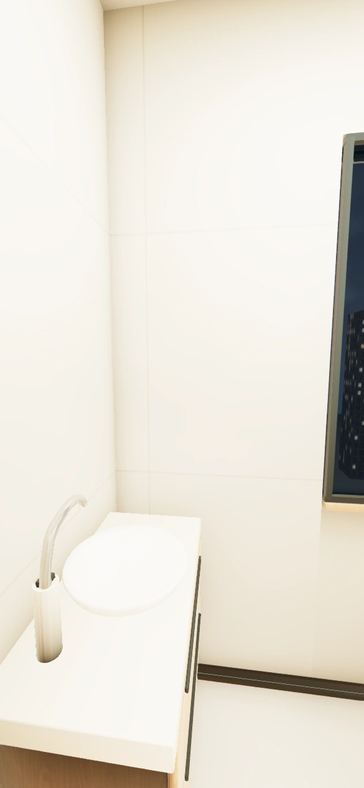
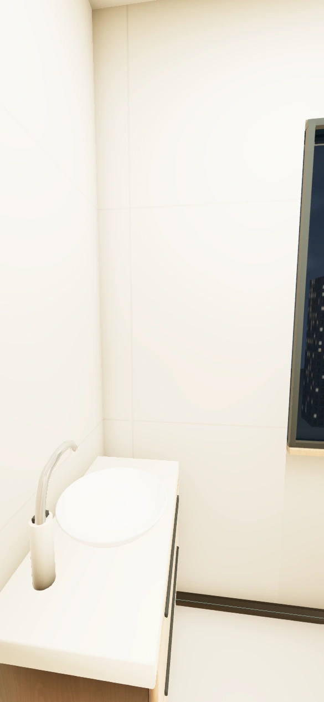
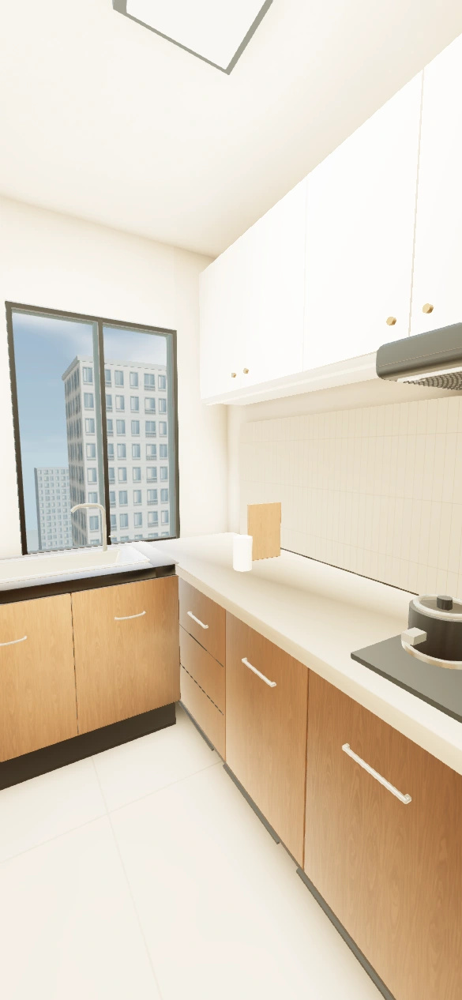
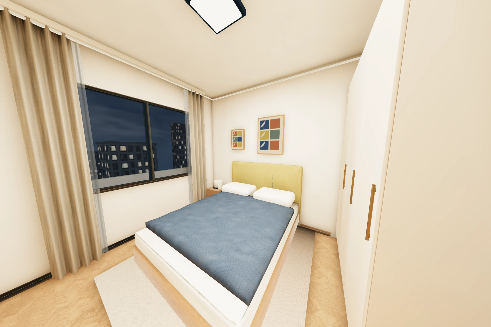
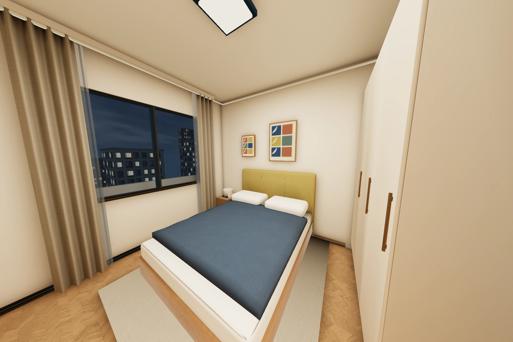

main 显示效果独立复审
被检查提交 1ac446d67b3f14005ee3b15074705adce5e5862e · 2026-11-26
VIS-02 墙顶斑驳、VIS-03 陶瓷折面复核通过；VIS-01 默认开灯过亮仍存在，VIS-04为已知未修复项，新增记录VIS-05枕头接缝局部黑斑。本轮只审计/记录，不修应用、不重拍宣传片、不合入release。
| 编号 | 结论 | 证据与范围 |
|---|
| VIS-01 | 未通过：默认开灯过亮仍存在 | 默认灯强仍为100%，曝光默认值未改。全新浏览器下，手机卫生间夜晚中央采样区接近白色比例49.2%（上轮49.6%），亮度中位数约242/255；厨房正午开灯三通道均≥250的比例10.7%（上轮10.8%）。墙砖/白柜/陶瓷的层次仍被压缩。降低灯强的对比实验已提供，但不等于默认值已调整。指标含浅色材料，不是照度测量。 |
| VIS-02 | 原墙顶缺陷复核通过 | 同机位、正午关灯、等待静态光照及对应房间反射完成后，客餐厅、主次卧、卫生间墙顶原有云团暗块明显消除，过渡恢复平顺。此结论限于已复核机位和状态；床品局部残余另见VIS-05。 |
| VIS-03 | 原陶瓷缺陷复核通过 | 阳台台盆、卫生间盆体及马桶的三角折痕/放射状皱褶在high/mobile画面中不再复现。盆沿和盆内过渡已改善。全实体拓扑检查通过；该通过不代表任意视角的所有曲面均已验收。 |
| VIS-04 | 已知未修复，保留 | 按用户说明保留。切换书房门仍使主卧退出固定照明并切换到旧光照，整体明暗与材质观感改变；不将其标为本轮新增问题。 |
| VIS-05 | 本轮新增记录：床品接缝局部黑斑 | 家装A、室内、正午、关灯，主卧和次卧枕头前沿/角部出现成串黑斑和锯齿状暗线；手机尺寸更明显。Chrome和Windows WebKit均在照明/反射完成后及间隔2秒的重复帧中复现。夜晚开灯时较不明显。尚未确证是顶点烘焙/AO、接缝几何还是材质/法线造成，也不据此断言由本次修复引入。 |
74张桌面/手机房间与细节新采集；Chrome桌面、手机、缺扩展回退、Windows WebKit共64种照明状态通过。两档660份实体拓扑无开放边、非流形边、绕序、退化和反向法线错误。219张图、原几何快照、屋顶0缺口、门闭合/扫掠/家具净空通过。所有图均为真实WebGL画布，仅编码，无AI重绘或后期补光。
采集使用全新浏览器上下文，默认灯强100%，分别检查开灯/关灯；降灯强图只是已有控件的临时诊断。手机与微信UA及Windows WebKit均为模拟，不能作为实际手机验收。像素亮度统计不是照度或物理曝光测量。未发现新的整屏缺失、崩溃或横向溢出，但不据此保证任意视角零瑕疵。
客厅墙顶 · 正午关灯
 上轮审计 · 客厅墙顶 · 正午关灯
上轮审计 · 客厅墙顶 · 正午关灯 本轮独立复审 · 客厅墙顶 · 正午关灯
本轮独立复审 · 客厅墙顶 · 正午关灯阳台台盆近景 · 正午关灯
 上轮审计 · 阳台台盆近景 · 正午关灯
上轮审计 · 阳台台盆近景 · 正午关灯 本轮独立复审 · 阳台台盆近景 · 正午关灯
本轮独立复审 · 阳台台盆近景 · 正午关灯手机卫生间 · 夜晚默认灯强

上轮审计 · 手机卫生间 · 夜晚默认灯强
本轮独立复审 · 手机卫生间 · 夜晚默认灯强WebKit手机厨房 · 正午默认开灯

上轮审计 · WebKit手机厨房 · 正午默认开灯 本轮独立复审 · WebKit手机厨房 · 正午默认开灯
本轮独立复审 · WebKit手机厨房 · 正午默认开灯主卧 · 夜晚默认灯强

上轮审计 · 主卧 · 夜晚默认灯强 本轮独立复审 · 主卧 · 夜晚默认灯强
本轮独立复审 · 主卧 · 夜晚默认灯强主卧 · 夜晚临时50%灯强诊断
 上轮审计 · 主卧 · 夜晚临时50%灯强诊断
上轮审计 · 主卧 · 夜晚临时50%灯强诊断
本轮独立复审 · 主卧 · 夜晚临时50%灯强诊断